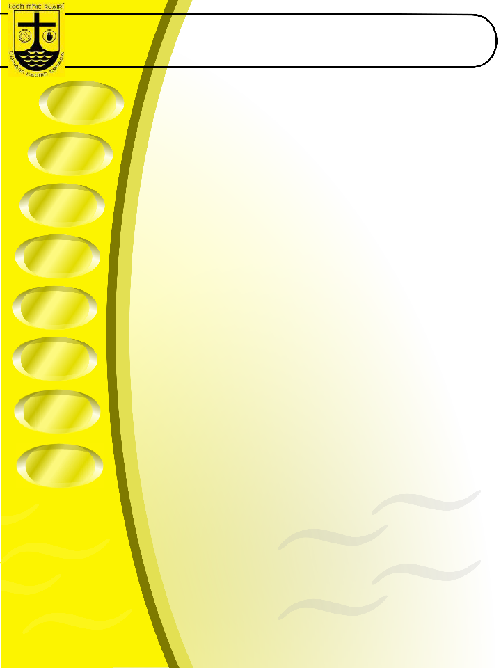
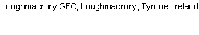

… them. Highlight of the year was reaching the final of the Jackie Lamb Tournament in Pomeroy going down to a single point defeat. Well done to Kieran and Marty on their work with these lads this year.
For the third year in a row we held U6 training on a regular basis as well. Neill Mullan and James Mullan did the most of the work with this group of young children. The lads had great fun all summer long and the good weather that we had probably did this idea no harm either. Special thanks are extended to Neill and James for all their work with these boys this year.
Also this year we ran a summer camp which proved to be one of the largest and most successful in the county with over 100 children taking part.
In concluding on underage football, I firstly want to thank all those who gave up their time freely to manage and coach our underage teams. These are the people who build our foundations for the future and give our children a very positive experience in their young lives. Finally on youth I want to congratulate Shane McCullagh our Youth Officer on an excellent year for youth games in our club.
The Club were, as per usual involved in a whole host of fund raising events throughout the year. As per usual we had a great selection of events run and promoted by our events committee that is chaired by Martin Donaghy. Club Loughmacrory continues to provide a vital part of our yearly income and I want to thank all who have and continued to contribute to this fund which is now into its 9th year. Club Loughmacrory is administered by John O Brien and Paddy McCullagh. Also I need to thank all those who continue to support our Lotto which has been ran by Paddy McCullagh and John Kelly this year. As well I wish to extend my thanks to all of our sponsors, especially to Jackie’s NISA our Senior and Reserve team sponsor.
I would also like to extend a very special thanks to Father Mallon for his support this year.
The Ulster GAA President’s Awards ceremony took place on Saturday 28th November in the Slieve Donard Hotel, Newcastle. On that evening we were Highly Commended on our facilities finishing in second place in Ulster and officially awarded the best facilities in the County. Perhaps now with this official recognition in mind the County Board could award us a few prestigious matches during the Championship competition of 2016.
Club President Seamus Mullan continues to do an excellent job running the Club Website as it keeps all our members up to date with information regarding Club activities. I would also like to mention County Committee delegate Stephen McCullagh for the work he carries out at this level on behalf of the club and for the good work he does on the CCC.
Club Merchandise continued to be very popular again this year with our members and I would like to acknowledge the work of Seamus Curran in administrating these orders.
..Contd